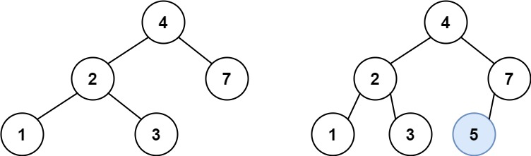

books / company-solutions / Tree
701. 二叉搜索树中的插入操作
| 题目信息 | 内容 |
|---|---|
| 难度 | 中等 |
| 核心模式 | 按 BST 有序性单向递归下降，找空位插入 |
| 时间复杂度 | O(h) |
| 空间复杂度 | O(h) |
题目与约束
给定二叉搜索树（BST）的根节点 root 和要插入树中的值 value ，将值插入二叉搜索树。 返回插入后二叉搜索树的根节点。 输入数据 保证 ，新值和原始二叉搜索树中的任意节点值都不同。
注意，可能存在多种有效的插入方式，只要树在插入后仍保持为二叉搜索树即可。 你可以返回 任意有效的结果 。
示例 1：

<strong>输入：</strong>root = [4,2,7,1,3], val = 5
<strong>输出：</strong>[4,2,7,1,3,5]
<strong>解释：</strong>另一个满足题目要求可以通过的树是：
<img alt="" src="https://assets.leetcode.com/uploads/2020/10/05/bst.jpg" />
示例 2：
<strong>输入：</strong>root = [40,20,60,10,30,50,70], val = 25
<strong>输出：</strong>[40,20,60,10,30,50,70,null,null,25]
示例 3：
<strong>输入：</strong>root = [4,2,7,1,3,null,null,null,null,null,null], val = 5
<strong>输出：</strong>[4,2,7,1,3,5]
提示：
-
树中的节点数将在
[0, 104]的范围内。 -
-108 <= Node.val <= 108 -
所有值
Node.val是 独一无二 的。 -
-108 <= val <= 108 -
保证
val在原始BST中不存在。
核心不变量
对任意节点，
val若小于它就去左子树，大于它就去右子树；一路走到空的位置，就是合法插入点。
完整推导
思路推导
- 直觉（为什么能"顺着方向"走？）
BST 的定义决定了整棵树的相对次序：左子树全小于根、右子树全大于根。因此拿 val 与当前节点比较，就唯一决定了它应该落在左边还是右边，无需回头搜索。
- 递归下降（到空位即插入）
若 root 为空，说明"该来的位置到了"，直接 new TreeNode(val) 返回；否则按大小关系把问题交给左子树或右子树，并把返回的新子树接回 root.left / root.right。
- 小例子（示例 1：root=[4,2,7,1,3], val=5）
5 > 4 去右子树（节点 7）；5 < 7 去左子树（空）；在 7 的左孩子位置插入 5。结果 [4,2,7,1,3,5]，仍是合法 BST。
- 收尾（返回根）
递归始终返回当前子树的根，最外层接住整棵树的根即可；插入不会改变原有节点之间的连接，除新增叶子外结构不变。
Java 实现（insertIntoBST）
class Solution {
public TreeNode insertIntoBST(TreeNode root, int val) {
// 走到空位：这里就是新节点的正确落点
if (root == null) {
return new TreeNode(val);
}
// val 更小，插入左子树，并把新的左子树接回
if (val < root.val) {
root.left = insertIntoBST(root.left, val);
} else {
// val 更大，插入右子树（题目保证不相等，不会走等于分支）
root.right = insertIntoBST(root.right, val);
}
return root;
}
}
复杂度
- 时间：O(h)，h 为树高。每层只比较一次并下沉一层，最坏（链状树）退化为 O(n)，平均 O(log n)。
- 空间：O(h)，递归栈深度等于树高；链状树最坏 O(n)。
易错点与扩展（面试高频考点）
- 忘记接回指针：
root.left = insertIntoBST(...)必须把返回值赋回，否则新节点虽创建却挂不上树。 - 以为要旋转重构：本题不要求平衡，任意合法位置都行，最简单就是插到叶子空位，别把问题想复杂。
- 迭代写法更省栈：用一个
cur指针边走边记录parent，走到空位后挂到parent的对应侧；空间 O(1)，可作为追问答案。 - 等于分支不存在：题目保证
val不与任何节点相等，若扩展为允许重复，需明确约定重复值放左还是放右。 - 空树边界：
root == null时直接返回新节点，是最容易被漏掉的用例。
力扣原题
C++ 实现
class Solution {
public:
TreeNode* insertIntoBST(TreeNode* root, int val) {
if (root == nullptr) {
return new TreeNode(val);
}
if (val < root->val) {
root->left = insertIntoBST(root->left, val);
} else {
root->right = insertIntoBST(root->right, val);
}
return root;
}
};
Python 实现
class Solution:
def insertIntoBST(self, root: Optional[TreeNode], val: int) -> Optional[TreeNode]:
if root is None:
return TreeNode(val)
if val < root.val:
root.left = self.insertIntoBST(root.left, val)
else:
root.right = self.insertIntoBST(root.right, val)
return root